FinanceFlow: Sistema de Gestión Financiera e IA
Sustentación de Ingeniería de Software — Trazabilidad Documental FD01 al FD04 y FD07
Mag. Ricardo Eduardo Valcárcel Alvarado
• Sebastian Rodrigo Arce Bracamonte (Código: 2019062886)
• Brant Antony Chata Choque (Código: 2020067577)
Hoja de Ruta del Proyecto: De la Factibilidad al Despliegue
- • Diagnóstico de la fricción financiera.
- • Evaluación en 5 dimensiones (Técnica, Económica, Operativa, Legal, Ambiental).
- • Costos cloud ($20-$43/mes) y mitigación de riesgos.
- • Oportunidad de mercado PFM en Latam.
- • Declaración formal de posicionamiento.
- • Delimitación estricta de alcance (inclusiones vs exclusiones de fase 1).
- • FinanceFlow Solutions S.A.C.
- • Comparativa AS-IS vs TO-BE.
- • 22 Requerimientos Funcionales, 14 RNF y 18 Casos de Uso formales.
- • Modelo 4+1 de Kruchten.
- • Vistas: Casos de Uso, Lógica, Implementación, Procesos y Despliegue.
- • Monorepo, SDK desacoplado y 8 escenarios de calidad.
- • Roles: PO, SM rotativo, Dev Team.
- • Sprints 1 al 7 con Definition of Done.
- • 94 tests automatizados (100% pass rate) y resolución de impedimentos.
Diagnóstico de la Situación Actual y Objetivos Estratégicos
- Fricción y Abandono: El 78% de usuarios que intentan registrar sus gastos en libretas o Excel abandonan antes de 3 semanas por la carga repetitiva de digitación.
- Pérdida de Comprobantes: Los tickets térmicos físicos pierden legibilidad rápidamente o se extravían, impidiendo reconstruir el histórico de gastos.
- Dispersión de Fondos: Falta de consolidación entre compras en efectivo, transferencias digitales y tarjetas de débito.
- Carencia de Analítica Predictiva: Desconocimiento de gastos hormiga y ausencia de alertas tempranas ante sobregiros.
- Impacto Social: Elevado estrés financiero y baja tasa de ahorro en estudiantes universitarios y jóvenes profesionales en Tacna.
- 1. Lectura OCR Automática: Microservicio con OpenCV y Tesseract OCR para procesar tickets en <2 segundos.
- 2. Clasificador con IA: Modelo Multinomial Naive Bayes en Python/FastAPI con Silent Training continuo.
- 3. Visualización Dinámica: Dashboard interactivo con Recharts para arqueo diario, flujo de caja y cierre mensual.
- 4. Alertas Proactivas: Sistema de notificaciones ante picos anómalos o proximidad de límites de presupuesto.
- 5. Arquitectura Cloud: Autenticación JWT, soft delete y despliegue seguro con Uptime ≥ 99.5%.
Evaluación Multidimensional de Factibilidad (Las 5 Dimensiones)
Stack de alta madurez: Node.js/Express, Python/FastAPI, React.js/Vite y MongoDB Atlas. Motores consolidados: Tesseract OCR y Scikit-learn.
Costo mensual de infraestructura en la nube sumamente bajo ($20 - $43/mes). Inversión amortizable en corto plazo con alto ROI social y económico.
Curva de aprendizaje inferior a 5 minutos. Interfaz intuitiva y responsive pensada para usuarios sin formación técnica ni contable.
Alineado estrictamente a la Ley N° 29733 (Protección de Datos Personales del Perú). Hashing bcrypt, tokens JWT efímeros y borrado lógico seguro.
Filosofía de cero papel. Reducción de la exposición humana y desecho de tickets térmicos con Bisfenol A (BPA) altamente contaminantes.
Se autorizó el paso inmediato al Documento de Visión (FD02) y Requerimientos (FD03) asegurando soporte técnico, financiero y operativo.
Presupuesto Operativo Cloud y Matriz de Riesgos Mitigados
| Componente | Servicio Cloud | Costo Mensual |
|---|---|---|
| Frontend SPA | Vercel CDN Edge | USD $0 - $20 |
| Backend API | Render Web Service (Node.js) | USD $0 - $7 |
| Microservicio ML | Render Web Service (FastAPI) | USD $0 - $7 |
| Base de Datos | MongoDB Atlas M0/M10 | USD $0 - $9 |
-
Baja nitidez en fotos de comprobantes [ALTO]:
Mitigación: Pipeline OpenCV con umbralización adaptativa de Otsu, escala de grises y corrección de perspectiva antes del OCR. -
Deriva del modelo de clasificación [MEDIO]:
Mitigación: Silent Training supervisado por las confirmaciones del usuario con validación de threshold probabilístico. -
Latencia por Cold Start en Render Free [ALTO]:
Mitigación: Tareas periódicas de Keep-Alive HTTP para mantener los contenedores calientes, reduciendo el inicio de 45s a <400ms. -
Brechas de seguridad en datos contables [CRÍTICO]:
Mitigación: Cifrado de contraseñas con bcrypt (10 salt rounds), autenticación stateless con JWT y headers Helmet.js.
Propósito del Producto, Mercado y Declaración de Posicionamiento
Estudiante o profesional que registra movimientos de alimentación, transporte y ocio de forma veloz.
Monitorea el estado de Vercel/Render, métricas de latencia y analiza logs del sistema.
Límites del Alcance: Inclusiones, Exclusiones y Criterios de Éxito
- Acceso Web Universal: SPA responsive operable en desktop, tablet y móviles sin descargas.
- OCR Automatizado: Extracción de total, fecha y proveedor desde fotos de comprobantes.
- Clasificación con IA: Modelo Naive Bayes reentrenable dinámicamente con Silent Training.
- Dashboard y Reportes: Visualizaciones interactivas con Recharts para balances y tendencias.
- Control Contable Riguroso: Arqueo diario de caja con semáforo y cierre mensual protegido con contraseña.
- Planificador de Metas: Cálculo del tiempo necesario de ahorro mensual para compras programadas.
- No Apps Nativas iOS/Android: Se prioriza la Web App PWA para maximizar compatibilidad y agilidad de entrega.
- No Integración Bancaria Directa: Se evita la burocracia de Open Banking y costos de token bancario regulado en fase 1.
- No Módulo de Inversiones Bursátiles: Foco exclusivo en finanzas personales operativas (ingresos, gastos y ahorros).
• Inmediatez: Latencia CRUD API < 300ms; procesamiento OCR < 3s.
• Tasa de Éxito de Tareas: ≥ 90% sin capacitación técnica.
Identidad Corporativa y Rediseño de Procesos AS-IS vs TO-BE
• Dirección General & Product Ownership
• Liderazgo Técnico & Arquitectura Cloud (Sebastian Arce)
• Ingeniería de Datos & Pipeline Machine Learning (Brant Chata)
• Aseguramiento de Calidad y Testing Automatizado
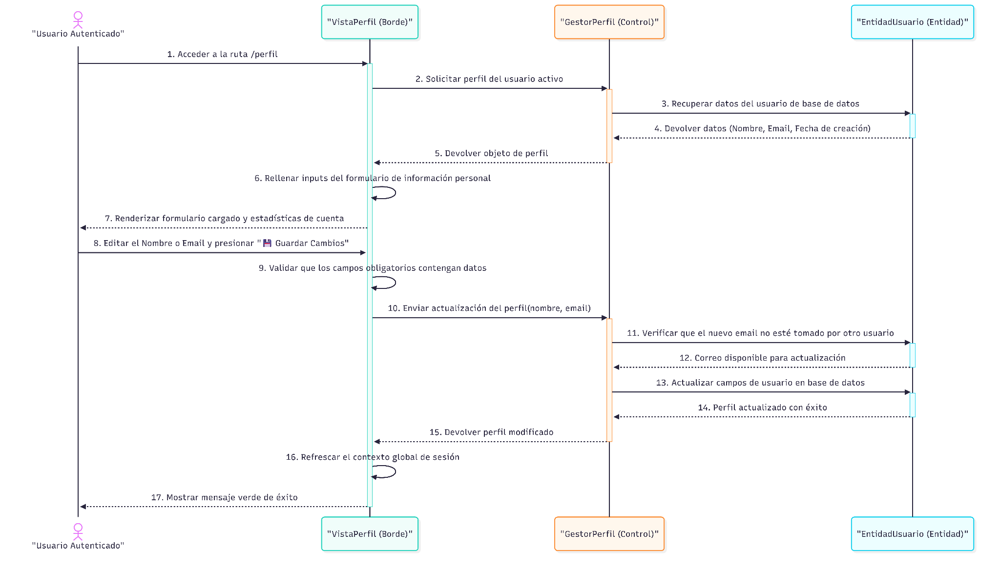
Catálogo de Requerimientos Funcionales Priorizados (RF-01 al RF-22)
- • RF-01: Registro de usuario con validaciones Zod.
- • RF-02: Login con emisión de JWT (TTL 7 días).
- • RF-03: Recuperación de contraseña por token email.
- • RF-22: Borrado lógico de cuenta (soft-delete seguro).
- • RF-04: Registro de movimientos de ingreso y egreso.
- • RF-05: Extracción OCR de datos desde fotos de boletas.
- • RF-06: Categorías dinámicas ("Otros" personalizable).
- • RF-08: Desactivación lógica de movimientos transaccionales.
- • RF-09 & 10: Dashboard con métricas de balance y flujo.
- • RF-11: Generación automática de alertas de sobregasto.
- • RF-12: Planificador de compras proyectadas por ahorro.
- • RF-13: Gráficos interactivos Recharts de balance y categorías.
- • RF-16: Banners recordatorios de arqueo y cierre pendiente.
- • RF-17: Arqueo diario de caja calculando diferencias en vivo.
- • RF-18: Cierre mensual formal protegido con contraseña.
- • RF-19: Bloqueo estricto de transacciones en periodos cerrados.
Casos de Uso Críticos e Interfaces Reales del Sistema
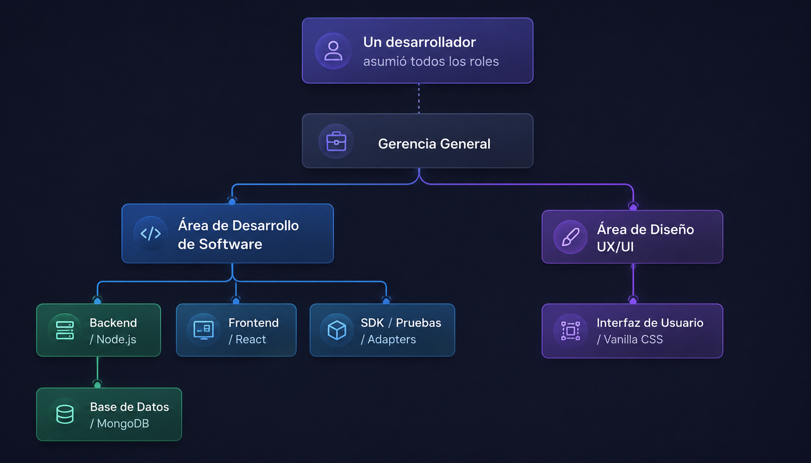
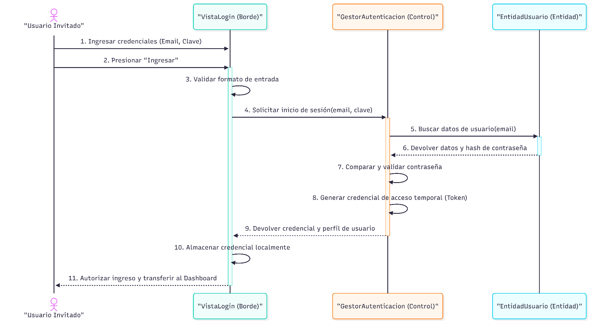
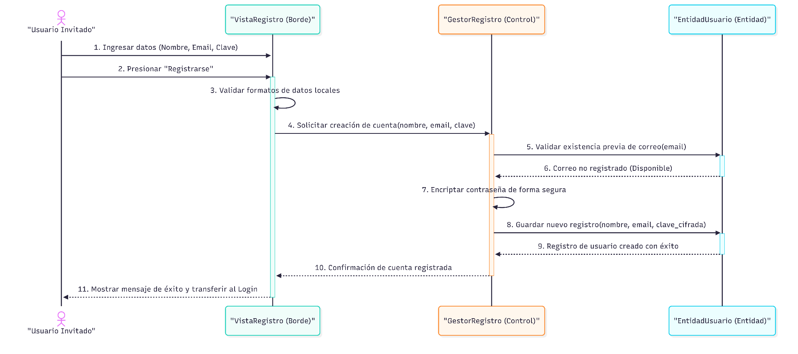
Requerimientos No Funcionales (RNF) y Modelo del Dominio
- • RNF-01 Seguridad: Hashing bcryptjs (10 salt rounds) computado en <300ms.
- • RNF-02 Protección: 100% de rutas privadas exigen JWT Bearer token válido.
- • RNF-03 Hardening: Cabeceras HTTP activas con Helmet.js y TLS 1.3 forzado.
- • RNF-06 Rendimiento: Latencia en operaciones CRUD ≤ 300ms en carga normal.
- • RNF-07 Concurrencia: Soporte verificado para 100 peticiones simultáneas sin fallo.
- • RNF-09 Usabilidad: Diseño 100% responsivo desde 320px hasta monitores 4K.
- • RNF-14 Disponibilidad: Uptime mensual garantizado superior al 99.0%.
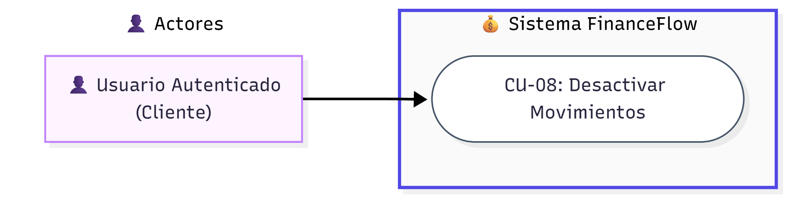
Fundamentos Arquitectónicos y Vista de Casos de Uso (Modelo 4+1)
- Adopción del Estándar: Estructuración formal según el estándar de Philippe Kruchten para satisfacer las perspectivas de usuarios, desarrolladores, arquitectos y operadores.
- Vista de Casos de Uso (Eje Central): Articula el valor de negocio y justifica la existencia de todos los componentes de las otras cuatro vistas.
- Principios Rectores Aplicados:
• Separación de responsabilidades (SoC).
• Arquitectura sin estado (Stateless REST API).
• Microservicios especializados desacoplados (Node.js + Python FastAPI).
• Consumo unificado mediante SDK cliente tipado.
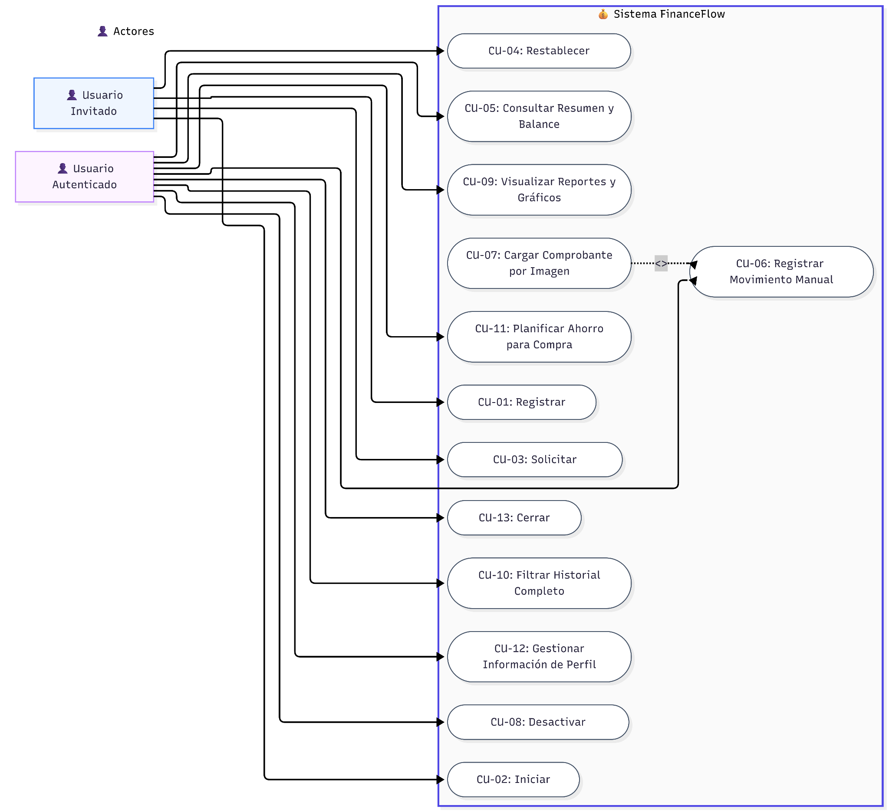
Vista Lógica: Diagrama de Subsistemas y Dinámica de Secuencia
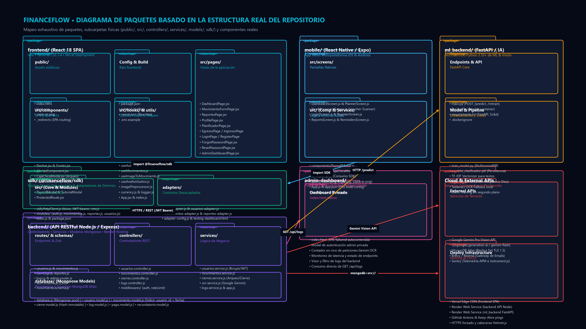
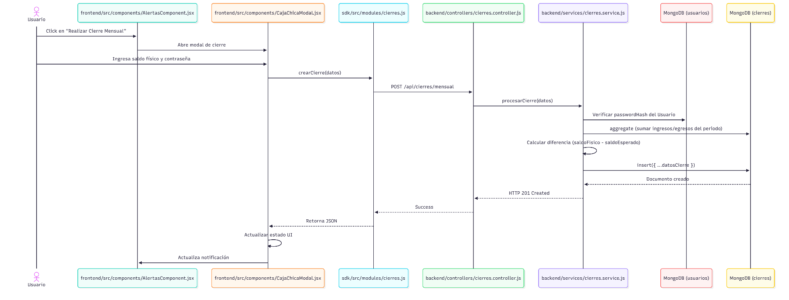
Vista Lógica: Diagrama de Clases del Sistema y Esquema NoSQL
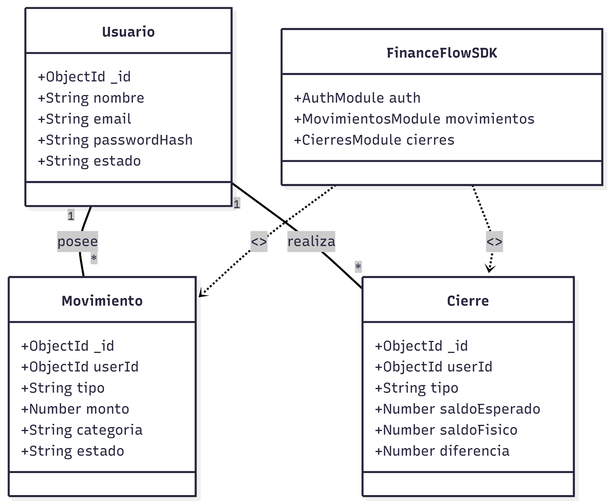
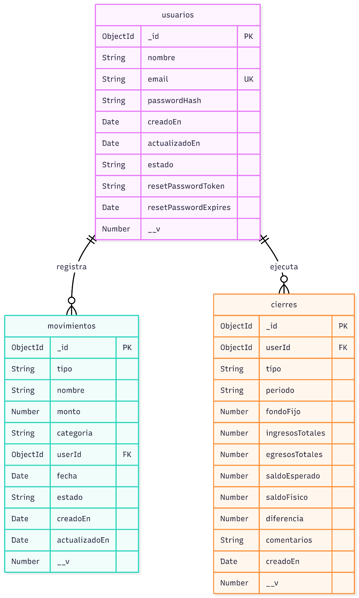
Vista de Implementación: Monorepo y Diagrama de Componentes
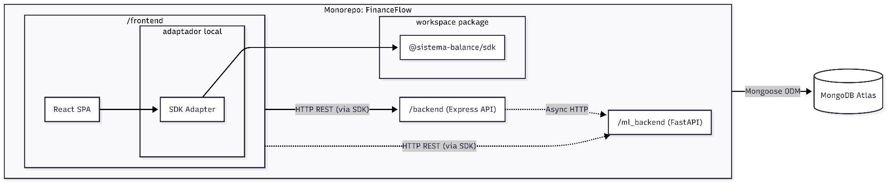
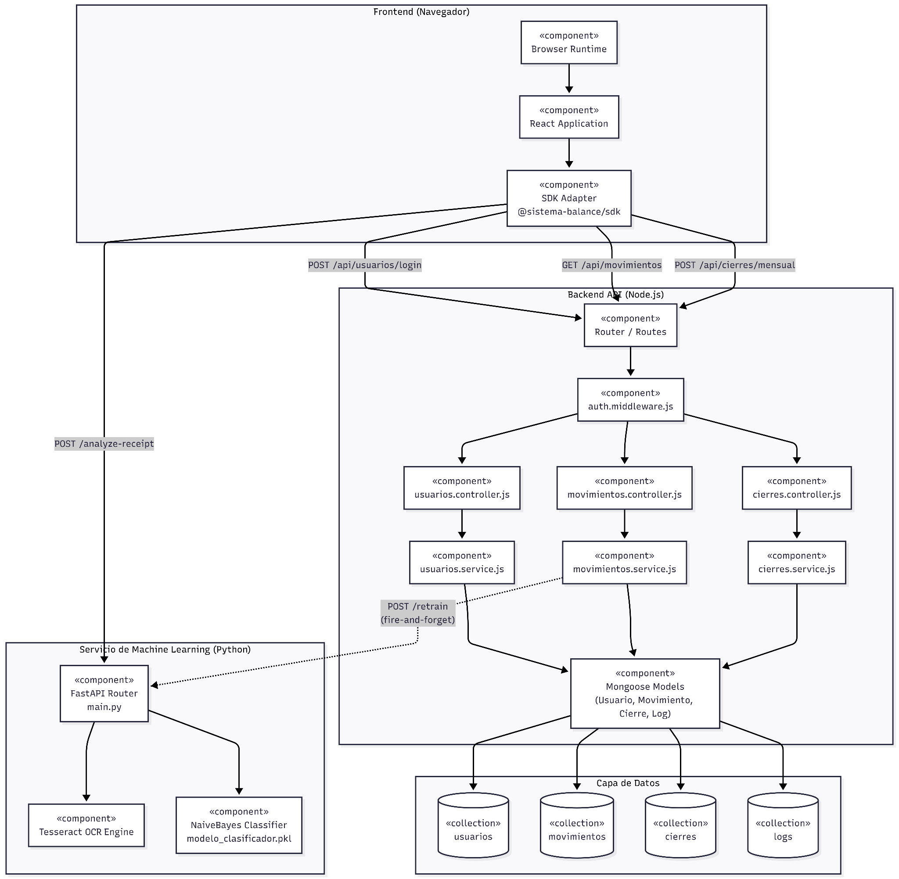
Vista de Procesos: Pipeline de OCR Asistido y Silent Training IA
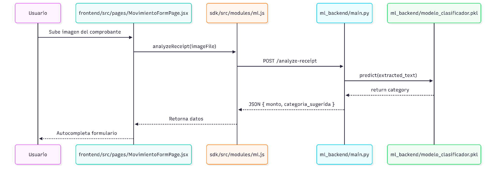
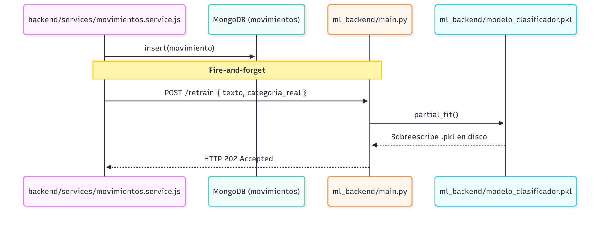
Vista de Despliegue Físico y Escenarios de Atributos de Calidad
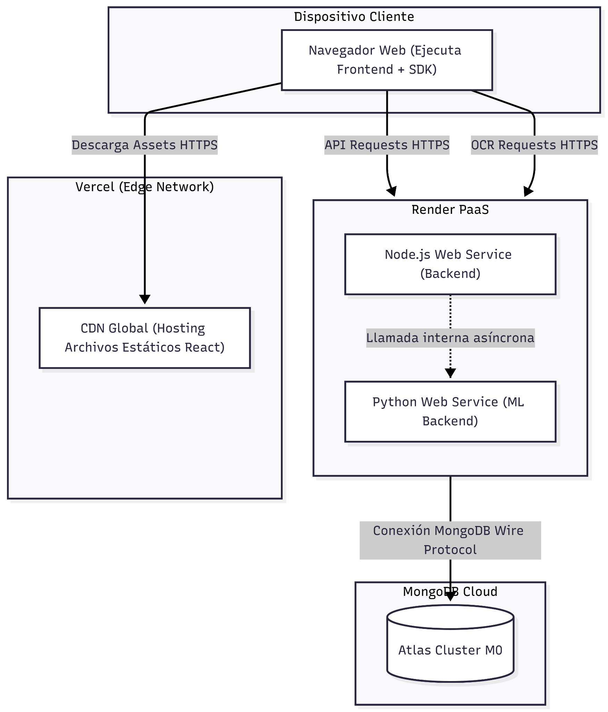
- Mitigación de Cold Start: Ping periódico a Render mantiene activos los contenedores Docker, reduciendo latencias de 45s a < 400ms.
- Carga Concurrente: Test de estrés con 100 peticiones/s arrojó 0% de errores y latencia media de 245ms.
- Mantenibilidad vía SDK: La incorporación de nuevos endpoints backend se integra en el SDK en <1 hora sin tocar componentes visuales.
- Auditoría & Soft Delete: Flag
activo: falsepreserva el 100% de la integridad de los datos contables históricos.
Organización del Equipo, Ceremonias y Definition of Done (DoD)
Priorización del Product Backlog, alineación con requerimientos académicos de la cátedra y validación de criterios de aceptación de negocio.
Rol rotativo (S. Arce / B. Chata) enfocado en remoción de bloqueos técnicos (CORS, límites de RAM en Render) y facilitación de ceremonias.
Sebastian Arce y Brant Chata: Equipo multidisciplinario autoorganizado (Full-Stack, Cloud & Data/ML) responsable de la entrega continua.
Sprints de 1-2 semanas, Sprint Planning con Story Points (Fibonacci), Daily Standups focalizadas, Sprint Reviews y Retrospectivas de mejora.
Cronograma Ejecutivo de Desarrollo: Evolución de Sprints 1 al 7
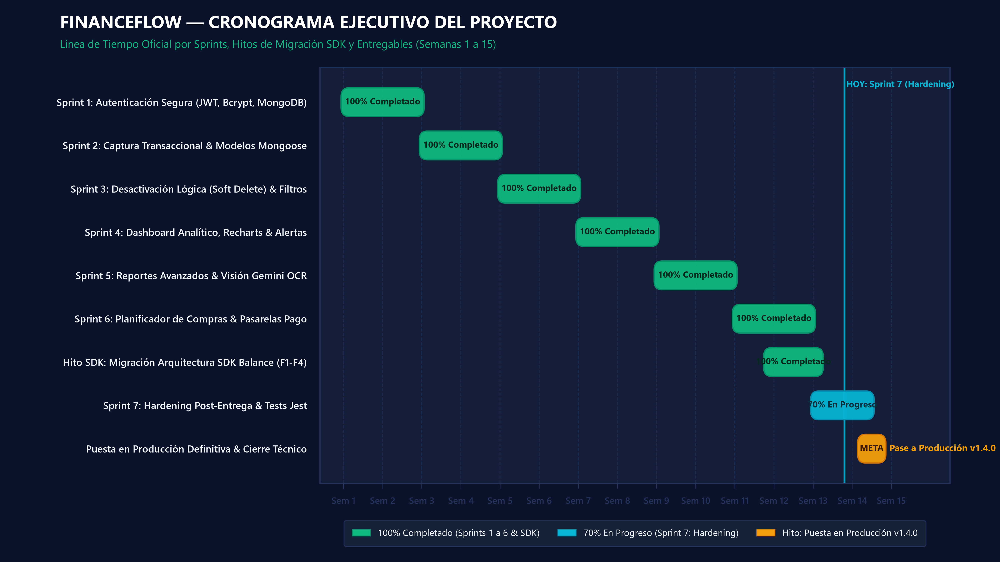
Aseguramiento de Calidad, Testing Automatizado e Impedimentos
- • 42 Pruebas Unitarias Backend (Jest): Autenticación, JWT, middleware de seguridad y esquemas Mongoose.
- • 24 Pruebas de SDK Balance: Validación de HttpClient, adaptadores y manejo de excepciones.
- • 18 Pruebas de IA y ML (Pytest): Endpoints FastAPI, preprocesamiento de imagen y parsing regex.
- • 10 Pruebas E2E de Integración: Flujo completo de login, carga de comprobante y cierre mensual.
-
Bloqueo de CORS cruzado Vercel-Render [ALTO]:
Solución: Middleware CORS dinámico en Express con whitelist estricta y cabeceras autorizadas. -
Picos de RAM por Tesseract en Render [CRÍTICO]:
Solución: Optimización de imagen Docker y preprocesamiento que escala las fotos antes del OCR. -
Acoplamiento de controladores frontend [MEDIO]:
Solución: Migración total al paquete desacoplado@financeflow/sdk, unificando tipados y contratos de llamada.
Matriz de Trazabilidad Cruzada: Desde la Necesidad al Código
| Módulo del Sistema | Diagnóstico FD01/FD02 | Requerimientos FD03 | Arquitectura FD04 | Sprint SCRUM FD07 |
|---|---|---|---|---|
| Seguridad & Auth | Protección datos (Ley 29733) | RF-01 a RF-03, RF-22, CU-01 | Secuencia 1, JWT Bearer, Bcrypt | Sprint 1 (100% Done) |
| Transaccional & OCR | Fricción en registro manual | RF-04 a RF-08, CU-06, CU-07 | Actividad 1, Tesseract OCR | Sprint 2 y 5 (100% Done) |
| Clasificador IA / ML | Categorización automática | RF-06, RF-11, PatronClasif. | Actividad 2, Silent Training | Sprint 5 (100% Done) |
| Arqueo y Cierres | Control estricto de efectivo | RF-16 a RF-20, CU-14, CU-15 | Secuencia 3, CierreMensual | Sprint 6 (100% Done) |
| SDK & Hardening | Mantenibilidad y testing | RNF-06, RNF-07, RNF-13 | Vista Implementación Monorepo | Sprint 7 (100% Done) |
Conclusiones de Ingeniería, Trabajo Futuro y Cierre
- Factibilidad Comprobada: Se demostró el 100% de viabilidad en las 5 dimensiones (técnica, económica, operativa, legal y ambiental) del documento FD01.
- Arquitectura Resiliente 4+1: El desacoplamiento en monorepo con el SDK Balance garantiza que el frontend y los microservicios evolucionen de forma independiente.
- Eliminación de la Fricción Real: La combinación de OCR y Machine Learning resolvió el motivo principal de abandono de los usuarios.
- Disciplina Metodológica: El ciclo ágil de 7 sprints con Definition of Done estricta resultó en un release estable con 94 tests en verde.
- App Móvil con React Native: Reutilización directa del paquete
@financeflow/sdkpara compilar apps nativas iOS y Android. - Integración Open Banking: Conexión automatizada con entidades bancarias locales para conciliar saldos de cuentas de ahorro.
- Asesor Financiero con Modelos LLM: Incorporación de agentes conversacionales para recomendaciones personalizadas de ahorro e inversión.
Autores: Sebastian Rodrigo Arce Bracamonte & Brant Antony Chata Choque.